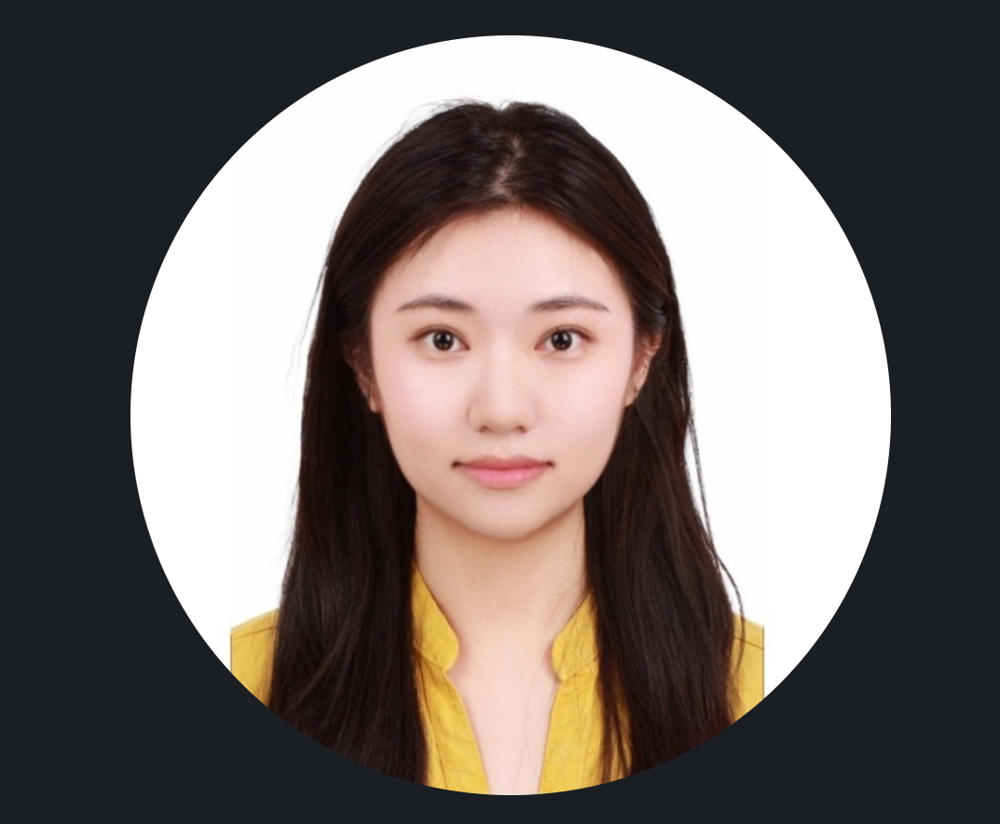

Art Education & Artificial Intelligence
Second Bachelor of Arts · Currently pursuing
Ludwig-Maximilians-Universität München
I’m Melanie Wang — bringing a visual perspective to digital communication, brand experiences and the stories that connect people.

 BMW Group
BMW GroupMy background connects Art & Multimedia with Media Informatics — combining visual thinking with an understanding of digital tools.
I’ve worked across internal communication, graphic and web design, media data and live events. From making information easier to navigate to creating visual materials, I enjoy turning ideas into something people can understand and engage with.
Alongside my degree in Art & Multimedia at LMU Munich, I am now pursuing a second bachelor’s degree in Art Education with a minor in Artificial Intelligence.
Design, communication and coordination,
across different teams and industries.
Currently working in Event & Logistics in Germany, in a hybrid role.
Customer community service and creative rollout, supporting community engagement and creative launches.
Brand representation, product demonstrations, customer engagement, consulting, sales and lead generation.
Selected assignments included PC Partner Experience, Bloader Flohmarkt at Pasing Arcaden, KitKat promotion and the LEC Season Finals Munich 2024.
Drawing, design, 3D and virtual reality.
And a little time outdoors, hiking.
Second Bachelor of Arts · Currently pursuing
Ludwig-Maximilians-Universität München
Bachelor of Arts · Minor in Media Informatics
Ludwig-Maximilians-Universität München
Volunteer mentoring to help incoming exchange students settle into university life and Munich.